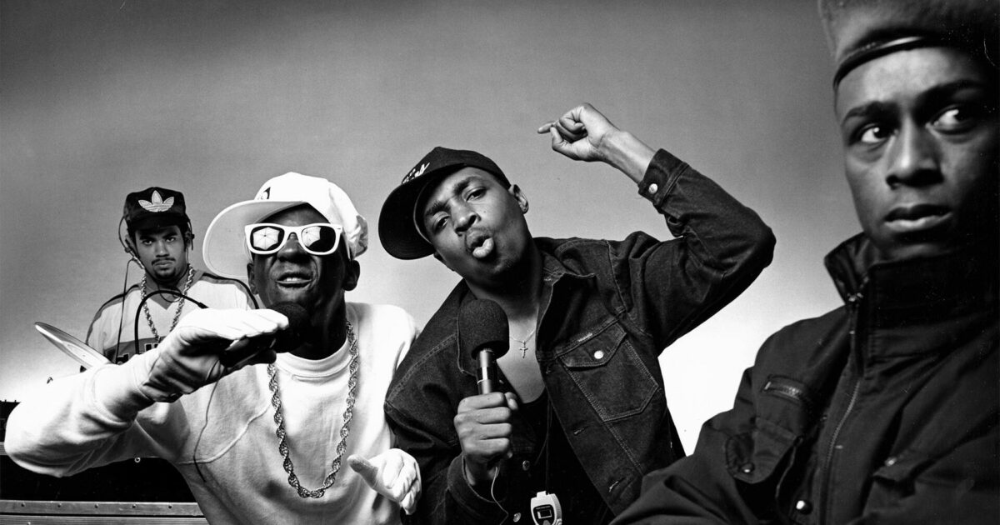

Origins of Hip-Hop
Hip hop emerged in the South Bronx, New York City during the early 1970s, born out of African American, Latino, and Caribbean communities. It began as a cultural movement that included four key elements: DJing, MCing (rapping), breakdancing, and graffiti art. Early pioneers like DJ Kool Herc used turntables to create new sounds, extending breakbeats from funk and disco records, while MCs rapped over the beats.
The Golden Age
In the 1980s, hip hop moved from the streets to mainstream culture. Artists like Grandmaster Flash, Run-D.M.C., and Public Enemy led the charge, mixing political themes with innovative beats. This era saw the birth of conscious rap, where social issues, politics, and racial identity were frequent topics. Run-D.M.C. helped blend hip hop with rock, collaborating with Aerosmith on the hit "Walk This Way."
Gangsta Rap
By the late 1980s, gangsta rap emerged on the West Coast, reflecting life in inner-city America. Artists like N.W.A., Tupac Shakur, and Dr. Dre spoke about the harsh realities of street life, police brutality, and systemic oppression. East Coast rap, led by artists like The Notorious B.I.G. and Wu-Tang Clan, rivaled the West Coast in terms of influence, leading to the infamous East Coast-West Coast rivalry.
Commercial Success
The 1990s saw hip hop become a global phenomenon, with artists like Jay-Z, Nas, and Missy Elliott blending commercial success with artistic credibility. Dr. Dre's production in albums like The Chronic helped popularize G-funk, a smooth, melodic style of gangsta rap. Meanwhile, Outkast and A Tribe Called Quest pioneered more eclectic, alternative sounds.
Modern Era
In the 2000s, hip hop further diversified, becoming one of the most influential genres worldwide. Kanye West, Eminem, Lil Wayne, and Nicki Minaj emerged as dominant figures. Subgenres like trap music, led by artists like T.I., Gucci Mane, and later Future, Young Thug, and Travis Scott, introduced heavy bass, hi-hats, and autotuned vocals to mainstream rap. Kendrick Lamar, J. Cole, and Drake became known for their lyrical depth, blending mainstream success with critical acclaim.
Influence and Cultural Impact
Hip hop is more than just music—it's a cultural movement that has influenced fashion, language, dance, and art. It continues to dominate pop culture globally, shaping trends and empowering marginalized communities.
